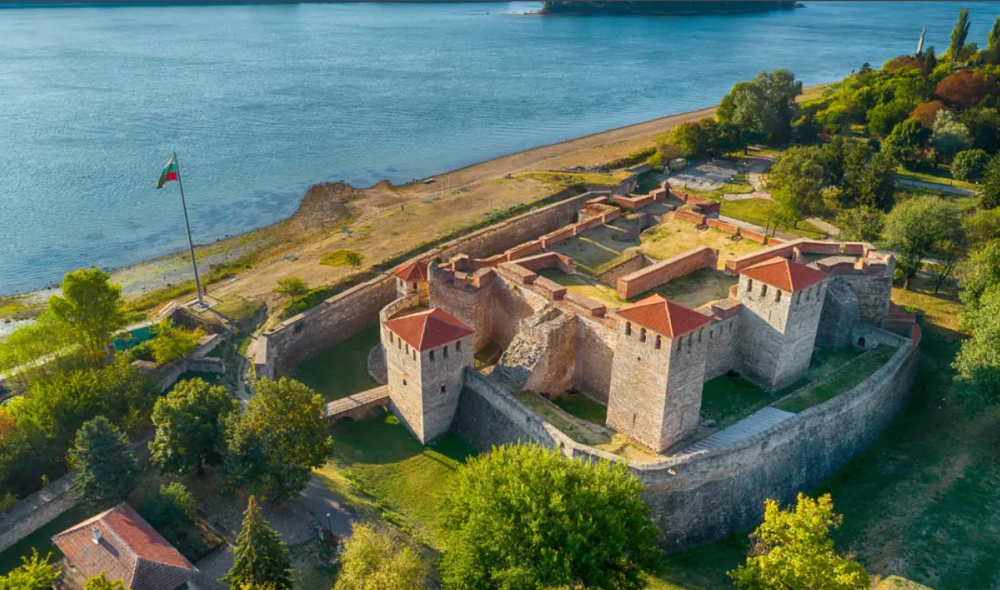
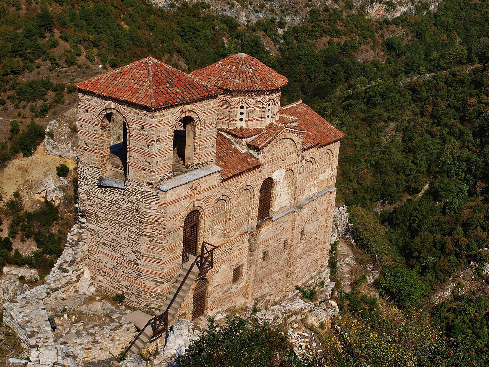
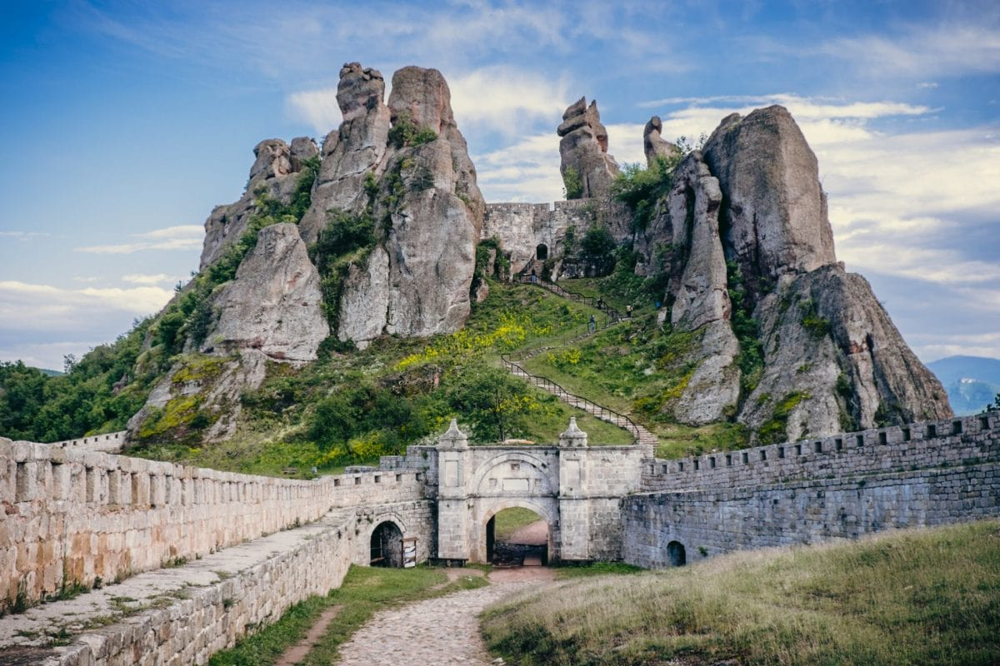
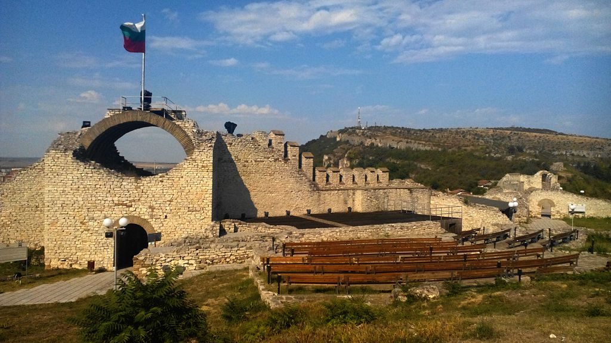
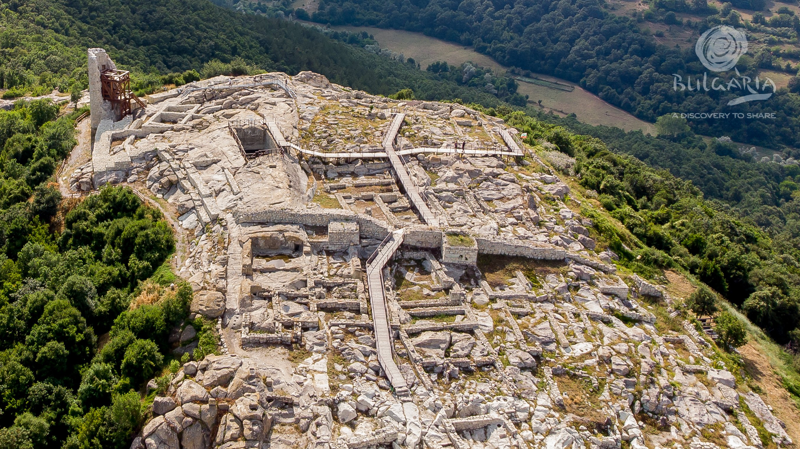
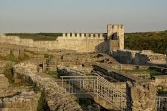

Средновековни и древни крепости – семантичен уеб проект
Карта на всички крепости
Сортиране и филтриране
Български
Византийски
Римски
Тракийски
Царевец
Тип: Българска
Регион: Северен централен регион
Област: Велико Търново
Град/Село: Велико Търново
Запазеност:Частично възстановена
Епоха на построяване: Византийска епоха (V-VII век)
Основна употреба: Второ българско царство (XII-XIV век)
Царевец е средновековна крепост във Велико Търново...
Забележителности
Патриаршеска църква
Царски дворец
Крепостни стени
Балдуинова кула
Такса: 6.00 лв
Работно време: 09:00-18:00
Координати: 43.0814, 25.6519

Баба Вида
Тип: Българска
Регион: Северозападен регион
Област: Видин
Град/Село: Видин
Запазеност:Отлично запазена
Епоха на построяване: X-XIV век
Основна употреба: Средновековна България
Баба Вида е единствената напълно запазена средновековна крепост в България. Разположена на брега на река Дунав във Видин, крепостта е построена върху основите на римската крепост Бононя. Името ѝ произлиза от легендата за владетелката Вида. Крепостта е с два концентрични реда крепостни стени и четири кули.
Забележителности
Два реда крепостни стени
Четири бойни кули
Водна защита от Дунав
Средновековен мост
Такса: 4.00 лв (2.05 €)
Работно време: 09:00-17:00
Координати: 43.9909, 22.8711

Асенова крепост
Тип: Византийска
Регион: Южен централен регион
Област: Пловдив
Град/Село: Асеновград
Запазеност:Частично запазена
Епоха на построяване: Византийска епоха (XI век)
Основна употреба: Средновековна България (XIII-XIV век)
Асенова крепост е средновековна крепост в Родопите, известна още като Асеновата крепост. Разположена е на скалист рид край Асеновград. Възстановена е от цар Иван Асен II през XIII век. Най-забележителен е запазената църква "Света Богородица Петричка" с ценни стенописи от XIII-XIV век.
Забележителности
Църква "Света Богородица Петричка"
Средновековни стенописи
Крепостни кули
Скално укрепление
Такса: 3.00 лв (1.53 €)
Работно време: 08:30-17:30
Координати: 41.9831, 24.8731

Белоградчишка крепост
Тип: Римска
Регион: Северозападен регион
Област: Видин
Град/Село: Белоградчик
Запазеност:Добре запазена
Епоха на построяване: Римска епоха (I-III век)
Основна употреба: Средновековна България (XIV век)
Белоградчишката крепост е разположена сред Белоградчишките скали и е един от най-добре запазените паметници на крепостното строителство в България. Построена е върху римска основа и е развивана през византийската и българската епохи. Крепостта е естествено защитена от скалните образувания.
Забележителности
Три крепостни двора
Естествена скална защита
Римски основи
Наблюдателни кули
Такса: 5.00 лв (2.56 €)
Работно време: 09:00-18:00
Координати: 43.6272, 22.6850
Трапезица
Тип: Българска
Регион: Северен централен регион
Област: Велико Търново
Град/Село: Велико Търново
Запазеност:Археологически останки
Епоха на построяване: Второ българско царство (XII век)
Основна употреба: XII-XIV век
Трапезица е средновековна крепост на едноименния хълм във Велико Търново. Била е боярската част на средновековната столица, където са живеели аристократи и богати търговци. Открити са основите на 17 църкви, което свидетелства за богатството на квартала. Името идва от формата на хълма - трапец.
Забележителности
17 средновековни църкви
Боярски жилища
Крепостни стени
Археологически резерват
Такса: 2.00 лв (1.02 €)
Работно време: свободен достъп
Координати: 42.5055, 24.7067

Хисаря
Тип: Византийска
Регион: Северозападен регион
Област: Ловеч
Град/Село: Ловеч
Запазеност:Частично запазена
Епоха на построяване: Византийска епоха (IV-VI век)
Основна употреба: Османска епоха (XV-XIX век)
Хисаря в Ловеч е средновековна крепост на хълм над старата част на града. Построена е върху римски и византийски основи. През османския период е била важен гарнизонен пункт. Свързана е с Вароша чрез известния Покрит мост. От крепостта се открива панорамна гледка към града.
Забележителности
Крепостни стени
Наблюдателни кули
Връзка с Покритият мост
Панорамна гледка
Такса: 0.00 лв (0.00 €)
Работно време: свободен достъп
Координати: 42.5055, 24.7067

Перперикон
Тип: Тракийска
Регион: Южен централен регион
Област: Кърджали
Град/Село: село Горно Нанево
Запазеност:Археологически обект
Епоха на построяване: Бронзова епоха (II хилядолетие пр.н.е.)
Основна употреба: Тракийска и римска епоха
Перперикон е древно тракийско скално светилище и крепост в Родопите. Един от най-значимите мегалитни паметници в България. Според легендите тук се е намирало светилището на Дионис. Скалният комплекс включва дворци, храмове и укрепления, издълбани в скалата. Археологическите разкопки продължават и днес.
Забележителности
Скален дворец
Тракийско светилище
Римска базилика
Средновековна крепост
Такса: 4.00 лв (2.05 €)
Работно време: 09:00-18:00
Координати: 41.4300, 25.4706
Русокастро
Тип: Византийска
Регион: Югоизточен регион
Област: Бургас
Град/Село: село Русокастро
Запазеност:Археологически останки
Епоха на построяване: Византийска епоха (X-XI век)
Основна употреба: Средновековна България (XIII-XIV век)
Русокастро е средновековна крепост близо до Бургас, известна с битката от 1332 г., в която цар Иван Александър побеждава византийците. Крепостта е била важен стратегически пункт за контрол над пътищата към южното Черноморие. Днес са запазени руини от крепостните стени и кули.
Забележителности
Крепостни стени
Бойни кули
Историческо място на битка
Археологически находки
Такса: 0.00 лв (0.00 €)
Работно време: свободен достъп
Координати: 42.5592, 27.3258

Шуменска Крепост
Тип: Българска
Регион: Североизточен регион
Област: Шумен
Град/Село: град Шумен
Запазеност:Частично възстановена
Епоха на построяване: Ранна железна епоха (XII-XI век пр.н.е.)
Основна употреба: Първо и Второ българско царство
Шуменската крепост е разположена на плато Шуменско плато, на 3 км от града. Една от най-значимите средновековни крепости в България. През Първото българско царство е била важен военен и административен център. Запазени са крепостни стени, кули и резервоари за вода. През 1985 г. е обявена за исторически паметник.